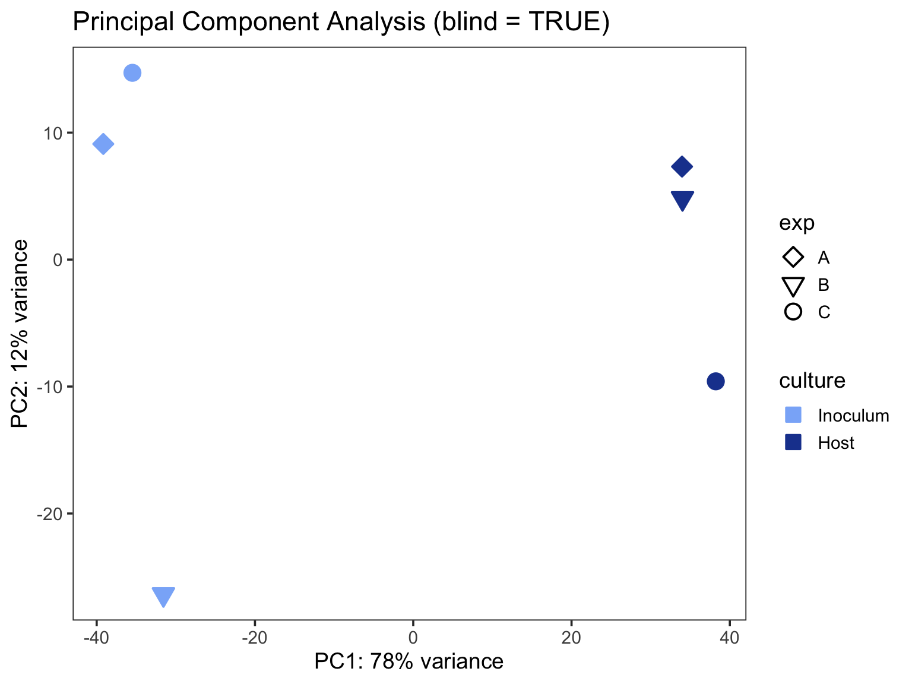
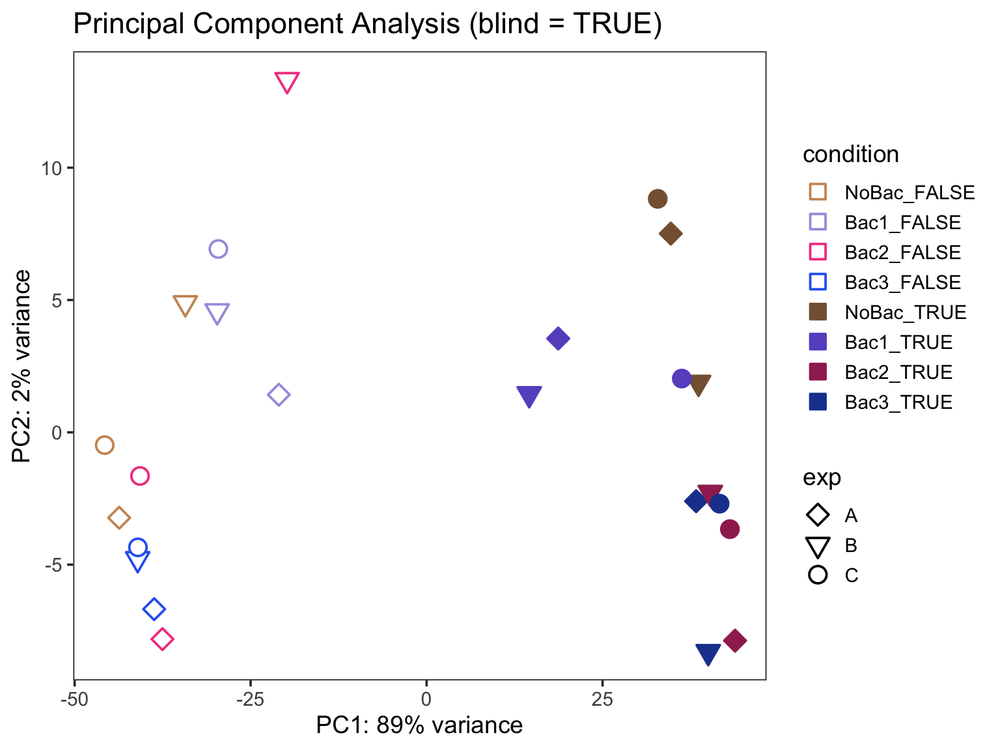

# Set up your R environment
library(tidyverse)
library(here)
library(tximport)
library(DESeq2)
library(vsn)
library(edgeR)
library(variancePartition)
library(ashr)
library(SummarizedExperiment)
SE_DIR <- here("../inst/extdata/SE")Create SE for CONTENTO
Overview
CONTENTO expects a single SummarizedExperiment1 (SE) object (.rds) containing expression data, differential expression results for every contrast, and descriptive metadata. This document walks through building that object with DESeq22 from two common quantification outputs: per-sample featureCounts3 files (Example 1) and RSEM4 gene-level results imported with tximport5 (Example 2). CONTENTO doesn’t depend on how reads were aligned (e.g. STAR6 or HISAT27) or quantified (e.g. Salmon8), or on the DE tool (e.g. edgeR9, limma-voom10,11): you can build a compatible SE from any of them as long as you reproduce the following structure.
A CONTENTO-compatible SE has four required components:
- assays: must contain an assay named
expr_matrix, which provides the expression values used by CONTENTO visualizations and downstream analyses. - rowData: one row per gene, with DE statistics for each contrast stored as columns named
<name>__<contrast_name>(double underscore separator, e.g.log2FC__VirusTvsF_NoBac,padj__VirusTvsF_NoBac). CONTENTO is agnostic to the DE tool used, but requires these exact generic statistic names:log2FC,statandpadj(required for every contrast), andlog2FC_shrunk(optional). If your tool uses different names (e.g. DESeq2’slog2FoldChange, edgeR’slogFC), rename the columns to this vocabulary before building the SE (see Rename Columns for CONTENTO). Any other columns you include (e.g.baseMean,lfcSE) are carried through but not used by CONTENTO. - colData: sample-level metadata (experimental factors used for grouping/coloring in plots).
- metadata(se): a list with, at minimum,
contrasts(a character vector of unique contrast names matching the__<contrast_name>suffixes described above). Optional fieldsorganismandannotationunlock MSigDB-based12,13 GSEA14 and annotation loading, respectively (see the annotation tutorial for details). Two further optional fields fine-tune the CONTENTO experience:db_species: character string,"HS"or"MM". By default, CONTENTO picks the MSigDB source database automatically:"MM"(mouse-curated15) only whenorganismis exactly"Mus musculus", and"HS"(human-curated) for every othermsigdbr-supported16 organism. Setdb_speciesto override that default — e.g. to force human-curated gene sets for a mouse dataset, or mouse-curated gene sets ortholog-mapped onto another species, instead of the automatic choice. Note thatorganismmust still be a speciesmsigdbrrecognizes for ortholog mapping (see the list of supported species);db_speciesdoes not extend MSigDB support to organismsmsigdbrdoesn’t already support.dataset_name: character string used as the base filename prefix for every file downloaded from CONTENTO (tables, plots, etc.). If omitted, CONTENTO falls back to the uploaded SE filename, or"CONTENTO"if that isn’t available either.
| Feature | Required SE component |
|---|---|
| DE tables & volcano plots | rowData contrast columns |
| Expression Plot / Heatmap / GESECA17 | expr_matrix assay |
| Variance Decomposition tab | optional varpart_* rowData columns |
| MSigDB GSEA | metadata(se)$organism matching a valid msigdbr species (metadata(se)$db_species optionally overrides which source database — human or mouse — is queried) |
| Neighborhood Analysis (bacteria) | metadata(se)$organism == "Bacteria" + annotation with coordinates |
Workflow
Both examples below follow the same sequence:
- Metadata Preparation: load sample metadata and set factor levels/labels.
- Data Import: read the per-sample quantification files into a count matrix (Example 1, featureCounts) or a
tximportobject (Example 2, RSEM). - Exploratory DESeq2 Analysis (Optional): fit a simple model and inspect a PCA to inspect the data before committing to a final design.
- Differential Expression Analysis: fit the full design, extract one or more contrasts, and rename output columns to CONTENTO’s generic vocabulary (
log2FC,stat,padj). - Create Expression Matrix: extract the expression matrix for use in CONTENTO (normalization recommended).
- Create SummarizedExperiment (SE) Object: assemble assays, rowData, colData, and metadata with
convert_to_SE().
The two examples cover different parts of CONTENTO. Pick the one closest to your data and borrow from the other as needed: import routes, designs and organisms are interchangeable (e.g. bacterial featureCounts files can go through the Example 1 import and the Example 2 design with multiple contrasts).
| Example 1 | Example 2 | |
|---|---|---|
| Dataset | One bacterial strain alone in its inoculum vs in a host model | Host model × virus infection × four bacterial conditions |
| Import | featureCounts files → count matrix → DESeqDataSetFromMatrix() |
RSEM → tximport → DESeqDataSetFromTximport() |
| Design | ~ culture + exp, one contrast (Host vs Inoculum) |
~ virus + bacteria + virus:bacteria + exp, several contrasts + variance partitioning |
organism |
"Bacteria" → Neighborhood Analysis |
"Homo sapiens" → MSigDB GSEA |
annotation |
Sau_KPL4403_annot (built in) |
Homo_sapiens.GRCh38.113_annot (built in) |
| Output | Example1_SE.rds |
Example2_SE.rds |
Both examples use anonymized demonstration data: they illustrate the workflow and are not intended for biological interpretation.
Example files. The input files for both examples (featureCounts and RSEM outputs, sample metadata) and the resulting Example1_SE.rds and Example2_SE.rds are in inst/extdata/SE in the GitHub repository. They are not included in the CONTENTO container. To run the code below, clone or download the repository and set SE_DIR to that folder. To only explore the results in the app, download the two SE files and upload them in the sidebar.
Helper Functions
Both examples use the two helper functions below. Run this section once before either example.
run_contrast_analysis()
This function runs the DESeq2 results() and lfcShrink() functions (with the ashr shrinkage estimator18) for a given contrast or coefficient, returning a data frame with the results. It handles both types of contrasts (main effects and interaction terms) and adds the contrast name to the results for easier identification.
run_contrast_analysis <- function(dds, contrast_name, contrast = NULL, coef = NULL) {
if (!is.null(contrast)) {
res <- results(dds, contrast = contrast, alpha = 0.05)
resLFC <- lfcShrink(dds, contrast = contrast, type = "ashr")
} else if (!is.null(coef)) {
res <- results(dds, name = coef, alpha = 0.05)
resLFC <- lfcShrink(dds, coef = coef, type = "ashr")
} else {
stop("Please provide either a 'contrast' or a 'coef'.")
}
res_df <- as.data.frame(res)
res_df$Geneid <- rownames(res_df)
res_df$contrast <- contrast_name
res_df$log2FoldChange_shrunk <- as.data.frame(resLFC)$log2FoldChange[
match(res_df$Geneid, rownames(resLFC))
]
return(res_df)
}convert_to_SE()
convert_to_SE() builds the final SE object. It reshapes the long-format differential expression results into the wide-format rowData structure expected by CONTENTO, where each statistic is stored in a separate column with the pattern <statistic>__<contrast_name>. It attaches sample metadata as colData, stores the expression matrix in the expr_matrix assay, optionally merges variance-partition results as varpart_* columns, and records contrasts, organism, annotation, db_species, and dataset_name in metadata(se). The same function can be reused regardless of experimental design or the number of contrasts being included.
convert_to_SE <- function(dds, contrasts_df, expr_matrix,
organism = NULL, annotation = NULL, varpart = NULL,
db_species = NULL, dataset_name = NULL) {
# Reshape to wide format
contrasts_wide <- contrasts_df %>%
pivot_wider(
id_cols = Geneid,
names_from = contrast,
values_from = -c(Geneid, contrast),
names_sep = "__"
)
contrasts_found <- unique(contrasts_df$contrast)
cat("✓ Found", length(contrasts_found), "contrasts:", paste(contrasts_found, collapse = ", "), "\n")
# Extract sample metadata
sample_metadata <- as.data.frame(colData(dds))
# Create rowData with Geneid as rownames
rowdata_df <- contrasts_wide %>%
column_to_rownames("Geneid")
# Add variance partition data if provided
if (!is.null(varpart)) {
cat("Loading variance partition data...\n")
tryCatch({
# Extract only the variance partition matrix
varpart_matrix <- varpart$varPart
# Get common genes between rowData and varPart
common_genes <- intersect(rownames(rowdata_df), rownames(varpart_matrix))
if (length(common_genes) > 0) {
# Convert to dataframe and add varpart_ prefix
varpart_df <- as.data.frame(varpart_matrix[common_genes, , drop = FALSE])
colnames(varpart_df) <- paste0("varpart_", colnames(varpart_df))
# Merge with rowdata_df (only for genes that exist in both)
rowdata_df[common_genes, colnames(varpart_df)] <- varpart_df
cat("✓ Added variance partition for", length(common_genes), "genes\n")
cat(" Factors:", paste(gsub("varpart_", "", colnames(varpart_df)), collapse = ", "), "\n")
} else {
cat("⚠ No common genes between contrasts and variance partition\n")
}
}, error = function(e) {
cat("⚠ Error loading variance partition:", e$message, "\n")
})
}
# Ensure rowData order matches dds
rowdata_df <- rowdata_df[rownames(dds), ]
# Verify dimensions match
stopifnot(identical(rownames(rowdata_df), rownames(dds)))
stopifnot(identical(rownames(sample_metadata), colnames(dds)))
cat("✓ Gene order verified:", nrow(rowdata_df), "genes match\n")
# Create SummarizedExperiment
se <- SummarizedExperiment(
assays = list(expr_matrix = expr_matrix),
colData = DataFrame(sample_metadata),
rowData = DataFrame(rowdata_df)
)
# Store metadata
metadata(se) <- list(
design = design(dds),
contrasts = contrasts_found,
organism = organism,
annotation = annotation,
db_species = db_species, # optional: "HS" or "MM", overrides automatic msigdbr routing
dataset_name = dataset_name, # optional: base filename prefix for CONTENTO downloads
date = Sys.Date() # recorded for reproducibility but not read by CONTENTO itself
)
# Return the SummarizedExperiment object
cat(" Dimensions:", nrow(se), "genes x", ncol(se), "samples\n")
cat(" Assays:", paste(names(assays(se)), collapse = ", "), "\n")
cat(" Columns in rowData:", ncol(rowData(se)), "\n\n")
return(se)
}Example 1
A two-group experiment comparing one bacterial strain in its inoculum medium with the same strain growing in a host model, in three independent experiments. Bacterial reads were counted per gene with featureCounts, which writes one count file per sample. The design compares the two conditions while accounting for variation between experiments, and produces a single contrast.
Step 1. Metadata Preparation
meta must contain one row per sample, a file_base column matching your featureCounts output filenames, and the experimental factor columns used in the design formula below.
# Read metadata file
meta <- read_csv(file.path(SE_DIR, "Example1_metadata.csv"))
# Create unique condition and label for each sample. This will be used by CONTENTO for visualization.
meta <- meta |>
mutate(
culture = factor(culture, levels = c("Inoculum", "Host")), # Inoculum (strain alone) is the reference level
exp = factor(exp),
condition = culture, # unique condition for each sample
label = paste(culture, exp, sep = " | ") # unique label for each sample
) |>
arrange(culture, exp)Step 2. Data Import
featureCounts writes one file per sample. Each file starts with two lines (the command that was run and the column names), followed by one row per gene: Geneid, the gene coordinates (Chr, Start, End, Strand, Length) and the read count. The code below:
- Reads each sample’s file, skipping the two top lines, and keeps only
Geneidand the count. We name the count columnCountsourselves, because featureCounts names it after the BAM file. - Checks that all files list the same genes in the same order.
- Combines the samples into one count matrix, with genes in rows and samples in columns, named and ordered as in
meta.
# Import featureCounts files
fc_folder <- file.path(SE_DIR, "featureCounts")
count_files <- file.path(fc_folder, paste0(meta$file_base, "_counts.txt"))
names(count_files) <- meta$label
read_featurecounts <- function(file) {
read_tsv(file,
skip = 2, # comment and header lines
col_names = c("Geneid", "Chr", "Start", "End", "Strand", "Length", "Counts"),
show_col_types = FALSE) |>
select(Geneid, Counts)
}
fc_list <- map(count_files, read_featurecounts)
# All files must list the same genes in the same order (same annotation file)
stopifnot(all(map_lgl(fc_list, ~ identical(.x$Geneid, fc_list[[1]]$Geneid))))
counts_matrix <- sapply(fc_list, `[[`, "Counts")
rownames(counts_matrix) <- fc_list[[1]]$Geneid
# Columns must match the metadata rows
stopifnot(identical(colnames(counts_matrix), meta$label))Step 3. Exploratory DESeq2 Analysis
With a count matrix, the DESeq2 object is built with DESeqDataSetFromMatrix() instead of DESeqDataSetFromTximport() (used for the RSEM files in Example 2). The design formula is ~ culture + exp: the culture effect we want to test, with the experiment as a covariate. With only one variable of interest, this is also the final design used for the contrast in Step 4.
# DESeq design
dds <- DESeqDataSetFromMatrix(countData = counts_matrix,
colData = meta,
design = ~ culture + exp)
# Run DESeq
dds <- DESeq(dds)Principal Component Analysis (PCA)
PCA calculated based on the VST normalized19–21 data using ntop=500 top features by variance.
vsd <- vst(dds, blind = TRUE)
pcaData <- plotPCA(vsd, intgroup = c("culture", "exp"), returnData = TRUE)
percentVar <- round(100 * attr(pcaData, "percentVar"))
Culture_colors <- c("#8ab4f8", "#1e439d")
Culture_fill <- c("#8ab4f8", "#1e439d")
ggplot(pcaData, aes(PC1, PC2)) +
geom_point(aes(fill = culture, color = culture,
shape = exp),
size = 4, stroke = 1) +
scale_shape_manual(values = c(23, 25, 21)) +
scale_color_manual(values = Culture_colors) +
scale_fill_manual(values = Culture_fill) +
ggtitle("Principal Component Analysis (blind = TRUE)") +
xlab(paste0("PC1: ", percentVar[1], "% variance")) +
ylab(paste0("PC2: ", percentVar[2], "% variance")) +
theme_bw(base_size = 14) +
theme(
panel.grid.major = element_blank(),
panel.grid.minor = element_blank()
) +
guides(
color = guide_legend(title = "culture", override.aes = list(color = Culture_colors, shape = 22))
)
Step 4. Differential Expression Analysis
The design from Step 3 already captures all the variables of interest, so we use the same dds to extract the single contrast, the strain in the host model vs the strain alone in its inoculum, with run_contrast_analysis(). resultsNames(dds) lists the available coefficients.
resultsNames(dds)[1] "Intercept" "culture_Host_vs_Inoculum"
[3] "exp_B_vs_A" "exp_C_vs_A" contrasts_df <- run_contrast_analysis(dds, contrast_name = "HostvsInoculum", coef = "culture_Host_vs_Inoculum")Rename Columns for CONTENTO
IMPORTANT:
CONTENTO requires generic column names so it works with any DE tool, not just DESeq2. Required: log2FC, stat, padj. Optional: log2FC_shrunk. DESeq2’s results() already outputs stat and padj with the right names — only log2FoldChange (and log2FoldChange_shrunk) need renaming.
contrasts_df <- contrasts_df |>
dplyr::rename(log2FC = log2FoldChange, log2FC_shrunk = log2FoldChange_shrunk)Step 5. Create Expression Matrix
The expression matrix can be generated using any normalization or transformation method suitable for downstream visualization and exploratory analysis. Here we use the DESeq2 variance stabilizing transformation (VST).
expr_matrix <- assay(vst(dds, blind = FALSE))Step 6. Create SummarizedExperiment (SE) Object
We use convert_to_SE() to build the final SE object. Setting organism = "Bacteria" enables CONTENTO’s Neighborhood Analysis, which uses the gene coordinates in the genome annotation. The annotation value must match the name of the annotation file without .rds (here the built-in Sau_KPL4403_annot.rds), so CONTENTO can find and load it. See the annotation tutorial for the list of built-in annotations and how to create your own.
SE = convert_to_SE(
dds = dds,
contrasts_df = contrasts_df,
expr_matrix = expr_matrix,
organism = "Bacteria",
annotation = "Sau_KPL4403_annot",
dataset_name = "Example1"
)✓ Found 1 contrasts: HostvsInoculum
✓ Gene order verified: 2929 genes match
Dimensions: 2929 genes x 6 samples
Assays: expr_matrix
Columns in rowData: 7 # Uncomment to save the SE file (left commented so rendering the tutorial doesn't overwrite the example files)
#saveRDS(SE, file.path(SE_DIR, "Example1_SE.rds"))Example 2
A multi-factor experiment in which a host model was infected or not with a virus, either alone or precolonized with one of three bacterial species, in three independent experiments. Host reads were quantified with RSEM. The design models virus status, bacterial condition and their interaction while accounting for variation between experiments, and produces several related contrasts plus variance partitioning results.
Step 1. Metadata Preparation
meta must contain one row per sample, a file_base column matching your RSEM output filenames, and the experimental factor columns used in the design formula below.
# Read metadata file
meta <- read_csv(file.path(SE_DIR, "Example2_metadata.csv"))
# Create unique condition and label for each sample. This will be used by CONTENTO for visualization.
meta <- meta |>
mutate(
bacteria = factor(bacteria, levels = c("NoBac", "Bac1", "Bac2", "Bac3")), # NoBac (no bacteria) is the reference level
virus = factor(virus, levels = c("FALSE", "TRUE")),
exp = factor(exp),
condition = interaction(bacteria, virus, sep = "_"), # unique condition for each sample
label = interaction(bacteria, virus, exp, sep = " | ") # unique label for each sample
)Step 2. Data Import
The tximport5 function reads in gene-level quantification results from RSEM and organizes them into a structured list for downstream analysis. It extracts estimated counts, transcript lengths, and abundance values, ensuring compatibility with DESeq2 and other Bioconductor workflows. Since some transcripts may have a reported length of 0, we update those to 1 to prevent issues during analysis.
# Import data using tximport
rsem_folder <- file.path(SE_DIR, "rsem_counts")
count_files <- file.path(rsem_folder, paste0(meta$file_base, ".genes.results"))
names(count_files) <- meta$label
txi <- tximport(count_files, type = "rsem", txIn = FALSE, txOut = FALSE)
txi$length[txi$length == 0] <- 1Step 3. Exploratory DESeq2 Analysis
We run an initial DESeq model design to explore the data. It does not consider the interaction between variables. We only use it to explore the data and possible effects for the 3 independent experiments. The design formula is ~ bacteria + virus + exp, which accounts for the main effects of bacteria, virus, and experiment without considering their interactions. This allows us to assess the individual contributions of each factor to gene expression changes. This exploratory fit is only used for the PCA check below, it is not the design used for contrast extraction, which comes later.
# DESeq design
dds <- DESeqDataSetFromTximport(txi,
colData = meta,
design = ~ virus + bacteria + exp)
# Run DESeq
dds <- DESeq(dds)Principal Component Analysis (PCA)
PCA calculated based on the VST normalized19–21 data using ntop=500 top features by variance. Samples from different experiments were interspersed rather than clustered, suggesting that the experimental batch effect was not a major source of variation in the data.
vsd <- vst(dds, blind = TRUE)
pcaData <- plotPCA(vsd, intgroup = c("bacteria", "virus", "exp"), returnData = TRUE)
percentVar <- round(100 * attr(pcaData, "percentVar"))
Bac.Vir_colors = c("#CC9564", "#a89de0", "#f54590", "#2e67f2", "#856141","#6855c9","#9f2d5e", "#1e439d")
Bac.Vir_fill <- c("white", "white", "white", "white", "#856141","#6855c9","#9f2d5e", "#1e439d")
ggplot(pcaData, aes(PC1, PC2)) +
geom_point(aes(fill = condition, color = condition,
shape = exp),
size = 4, stroke = 1) +
scale_shape_manual(values = c(23, 25, 21)) +
scale_color_manual(values = Bac.Vir_colors) +
scale_fill_manual(values = Bac.Vir_fill) +
ggtitle("Principal Component Analysis (blind = TRUE)") +
xlab(paste0("PC1: ", percentVar[1], "% variance")) +
ylab(paste0("PC2: ", percentVar[2], "% variance")) +
theme_bw(base_size = 14) +
theme(
panel.grid.major = element_blank(),
panel.grid.minor = element_blank()
) +
guides(
color = guide_legend(title = "condition", override.aes = list(color = Bac.Vir_colors, shape = 22))
)
Variance Partitioning Analysis
In this more complex design we are also interested in quantifying the contribution of each factor (virus, bacteria, and experiment) to the overall variance in gene expression. This is particularly important for understanding how much of the observed variability can be attributed to biological factors versus technical or experimental factors. CONTENTO allows users to visualize the variance partitioning results for each gene, providing insights into the relative importance of each factor in shaping gene expression patterns.
Gene-level expression values were modeled using precision weights estimated with the limma::voom() transformation11, which accounts for the mean–variance relationship in RNA-seq data, after TMM normalization of library sizes with edgeR::normLibSizes()22. Lowly expressed genes can be filtered using edgeR::filterByExpr()23, which removes genes with insufficient counts for reliable statistical analysis and improves the stability of downstream variance estimates.
We use the variancePartition24,25 package, which quantifies the proportion of variance in gene expression attributable to each factor in a linear mixed model.
run_varPart_analysis <- function(txi, meta, formula_vp, formula_fixed, filter_low_expr = TRUE) {
# Align meta to sample order
meta <- as.data.frame(meta)
meta <- meta[match(colnames(txi$counts), meta$label), ]
rownames(meta) <- meta$label
stopifnot(identical(rownames(meta), colnames(txi$counts)))
# Design matrix: only fixed effects (for voom & filterByExpr)
design <- model.matrix(formula_fixed, data = meta)
# Normalize counts
counts <- DGEList(txi$counts)
counts <- normLibSizes(counts)
# Filter low-expressed genes
if (filter_low_expr) {
keep <- filterByExpr(counts, design)
counts_used <- counts[keep, ]
} else {
counts_used <- counts
}
# logCPM values with voom
v <- voom(counts_used, design)
# Fit variance partition model (supports random effects)
varPart <- fitExtractVarPartModel(v, formula_vp, meta)
# Format results
varPart_df <- as.data.frame(varPart)
varPart_df$Geneid <- rownames(varPart_df)
# Return
return(list(v = v, varPart = varPart, varPart_df = varPart_df))
}Use formula_fixed with fixed effects (required for the design matrix step) while formula_vp is used to decompose variance across bacteria/virus/exp as random intercepts
formula_fixed <- ~ virus + bacteria + exp # for voom/filterByExpr design matrix
formula_vp <- ~ (1|virus) + (1|bacteria) + (1|exp) # for variance partitioning you can't mix fixed and random categorical variables in the same call
varPart <- run_varPart_analysis(txi, meta, formula_vp, formula_fixed, filter_low_expr = T)
plotVarPart(varPart$varPart) 
Step 4. Differential Expression Analysis
This design captures all the variables of interest. - virus + bacteria + virus:bacteria Includes main effects of virus and bacteria, as well as their interaction. This allows us to test whether the effect of virus depends on the species. This is equivalent to virus * bacteria. - exp To account for the batch effect of the 3 independent experiments, we include the experiment as a covariate in the model. This helps to control for any variability introduced by differences between experiments.
# DESeq design
dds <- DESeqDataSetFromTximport(txi,
colData = meta,
design = ~ virus + bacteria + virus:bacteria + exp)
# Run DESeq
dds <- DESeq(dds)Generate Contrast Results
Virus TRUE vs FALSE in each Species
This section tests the effect of virus infection (TRUE vs FALSE) within each bacterial species specifically:
- For the reference bacteria condition (NoBac), the virus effect is captured by the main coefficient
virus_TRUE_vs_FALSE. - For other bacteria conditions (Bac1, Bac2, Bac3), the virus effect is a combination of the main virus effect plus the interaction term (e.g.,
virusTRUE.bacteriaBac1).
contrast_list_Virus_TvsF <- list(
VirusTvsF_NoBac = "virus_TRUE_vs_FALSE",
VirusTvsF_Bac1 = list(c("virus_TRUE_vs_FALSE", "virusTRUE.bacteriaBac1")),
VirusTvsF_Bac2 = list(c("virus_TRUE_vs_FALSE", "virusTRUE.bacteriaBac2")),
VirusTvsF_Bac3 = list(c("virus_TRUE_vs_FALSE", "virusTRUE.bacteriaBac3"))
)
results_Virus_TvsF <- imap(contrast_list_Virus_TvsF, function(contrast_val, name) {
if (is.character(contrast_val)) {
run_contrast_analysis(dds, contrast_name = name, coef = contrast_val)
} else {
run_contrast_analysis(dds, contrast_name = name, contrast = contrast_val)
}
})Difference in Virus Effect Compared to NoBac
Here we focus on whether the virus effect differs between each bacteria condition and relative to the reference NoBac. This highlights species-specific modulation of virus response by comparing the virus effect in each bacteria against the baseline virus effect in NoBac.
- We use the interaction terms alone (e.g.,
virusTRUE.bacteriaBac1), which quantify how much the virus effect in each species deviates from that in NoBac.
contrast_list_VirusInteract_vsNoBac <- list(
VirusInteract_Bac1 = "virusTRUE.bacteriaBac1",
VirusInteract_Bac2 = "virusTRUE.bacteriaBac2",
VirusInteract_Bac3 = "virusTRUE.bacteriaBac3"
)
results_VirusInteract_vsNoBac <- imap(contrast_list_VirusInteract_vsNoBac, ~ run_contrast_analysis(dds, contrast_name = .y, coef = .x,))Bacteria vs NoBac in Virus FALSE
This comparison evaluates how each bacterial species differs from the reference NoBac when virus is absent (virus = FALSE). This reveals baseline species-specific gene expression differences without virus influence.
- Because virus FALSE is the baseline in the model, these contrasts use only the main bacteria effects (e.g.,
bacteria_Bac1_vs_NoBac).
contrast_list_Bacteria_vsNoBac_VF <- list(
Bac1vsNoBac_VF = "bacteria_Bac1_vs_NoBac",
Bac2vsNoBac_VF = "bacteria_Bac2_vs_NoBac",
Bac3vsNoBac_VF = "bacteria_Bac3_vs_NoBac"
)
results_Species_vsNoBac_VF <- imap(contrast_list_Bacteria_vsNoBac_VF, ~ run_contrast_analysis(dds, contrast_name = .y, coef = .x))Bacteria vs NoBac in Virus TRUE
Here we test the bacteria differences under virus infection (virus = TRUE). This reveals species-specific gene expression differences that might occur under virus influence.
- These contrasts combine the main bacteria effect plus the interaction with virus (e.g.,
bacteria_Bac1_vs_NoBac+virusTRUE.bacteriaBac1).
contrast_list_Bacteria_vsNoBac_VT <- list(
Bac1vsNoBac_VT = list(c("bacteria_Bac1_vs_NoBac", "virusTRUE.bacteriaBac1")),
Bac2vsNoBac_VT = list(c("bacteria_Bac2_vs_NoBac", "virusTRUE.bacteriaBac2")),
Bac3vsNoBac_VT = list(c("bacteria_Bac3_vs_NoBac", "virusTRUE.bacteriaBac3"))
)
results_Bacteria_vsNoBac_VT <- imap(contrast_list_Bacteria_vsNoBac_VT, ~ run_contrast_analysis(dds, contrast_name = .y, contrast = .x))Combine All Contrast Results
all_contrast_results <- list(
results_Virus_TvsF,
results_VirusInteract_vsNoBac,
results_Species_vsNoBac_VF,
results_Bacteria_vsNoBac_VT
) %>% flatten()
all_contrast_df <- bind_rows(all_contrast_results)Rename the DESeq2 columns to CONTENTO’s generic names, as in Example 1.
all_contrast_df <- all_contrast_df |>
dplyr::rename(log2FC = log2FoldChange, log2FC_shrunk = log2FoldChange_shrunk)Step 5. Create Expression Matrix
As in Example 1, the expression matrix can be generated using any normalization or transformation method suitable for downstream visualization and exploratory analysis. Here we use the DESeq2 variance stabilizing transformation (VST).
expr_matrix <- assay(vst(dds, blind = FALSE))Step 6. Create SummarizedExperiment (SE) Object
We use convert_to_SE() to build the final SE object. Setting organism = "Homo sapiens" enables CONTENTO’s MSigDB gene set enrichment, which works for any species supported by msigdbr. As in Example 1, the annotation value must match the name of the annotation file without .rds (here the built-in Homo_sapiens.GRCh38.113_annot.rds, built from Ensembl release 11326); for human data it adds gene names to the Ensembl IDs. We also pass the variance partitioning results from Step 3 with varpart: they are added as columns in rowData and shown in CONTENTO’s Variance Decomposition tab.
SE = convert_to_SE(
dds = dds,
contrasts_df = all_contrast_df,
expr_matrix = expr_matrix,
varpart = varPart,
organism = "Homo sapiens",
annotation = "Homo_sapiens.GRCh38.113_annot",
dataset_name = "Example2"
)✓ Found 13 contrasts: VirusTvsF_NoBac, VirusTvsF_Bac1, VirusTvsF_Bac2, VirusTvsF_Bac3, VirusInteract_Bac1, VirusInteract_Bac2, VirusInteract_Bac3, Bac1vsNoBac_VF, Bac2vsNoBac_VF, Bac3vsNoBac_VF, Bac1vsNoBac_VT, Bac2vsNoBac_VT, Bac3vsNoBac_VT
Loading variance partition data...
✓ Added variance partition for 23620 genes
Factors: bacteria, exp, virus, Residuals
✓ Gene order verified: 78932 genes match
Dimensions: 78932 genes x 24 samples
Assays: expr_matrix
Columns in rowData: 95 # Uncomment to save the SE file (left commented so rendering the tutorial doesn't overwrite the example files)
#saveRDS(SE, file.path(SE_DIR, "Example2_SE.rds"))Verify Your SE Object
Before uploading to CONTENTO, confirm:
assays(se)includesexpr_matrix(required for expression/heatmap/GESECA features).rowData(se)has<stat>__<contrast_name>columns for every entry inmetadata(se)$contrasts, with matching suffixes.log2FC__<contrast>,stat__<contrast>, andpadj__<contrast>columns (required);log2FC_shrunk__<contrast>is optional.metadata(se)$contrastsis a character vector, not a factor or list.- Contrast names do not contain
__(double underscore), which CONTENTO uses as the separator in rowData column names. metadata(se)$organism, if set, exactly matches a validmsigdbrspecies name (or is"Bacteria"for neighborhood analysis).metadata(se)$db_species, if set, is exactly"HS"or"MM"— overrides which MSigDB source database (human- or mouse-curated) is queried, butorganismmust still be a validmsigdbrspecies.metadata(se)$annotation, if set, matches the filename (without.rds) of a built-in annotation or of a file in the folder set byCONTENTO_ANNOTATION_DIR(see Running CONTENTO), so CONTENTO can load it automatically. An annotation file uploaded in the app does not need to match.metadata(se)$dataset_name, if set, is a short descriptive string — it becomes the prefix for every file CONTENTO lets users download.rownames(se)are consistent gene identifiers matching your annotation’sGeneidcolumn, if used.- For MSigDB enrichment,
rownames(se)are Ensembl gene IDs (ENSG...,ENSMUSG..., etc.), or your annotation file has a column of Ensembl IDs (see the annotation tutorial).
If a tab or control is missing/greyed out in CONTENTO, it’s almost always one of the above.
References
1.
Morgan, M., Obenchain, V., Hester, J. & Pagès, H. SummarizedExperiment: A Container (S4 Class) for Matrix-Like Assays. (2026). doi:10.18129/B9.bioc.SummarizedExperiment.
2.
Love, M. I., Huber, W. & Anders, S. Moderated estimation of fold change and dispersion for RNA-seq data with DESeq2. Genome Biology 15, 550 (2014).
3.
Liao, Y., Smyth, G. K. & Shi, W. featureCounts: an efficient general purpose program for assigning sequence reads to genomic features. Bioinformatics 30, 923–930 (2014).
4.
Li, B. & Dewey, C. N. RSEM: accurate transcript quantification from RNA-Seq data with or without a reference genome. BMC Bioinformatics 12, 323 (2011).
5.
Soneson, C., Love, M. I. & Robinson, M. D. Differential analyses for RNA-seq: Transcript-level estimates improve gene-level inferences. F1000Research 4, 1521 (2015).
6.
Dobin, A. et al. STAR: ultrafast universal RNA-seq aligner. Bioinformatics 29, 15–21 (2013).
7.
Kim, D., Paggi, J. M., Park, C., Bennett, C. & Salzberg, S. L. Graph-based genome alignment and genotyping with HISAT2 and HISAT-genotype. Nature Biotechnology 37, 907–915 (2019).
8.
Patro, R., Duggal, G., Love, M. I., Irizarry, R. A. & Kingsford, C. Salmon provides fast and bias-aware quantification of transcript expression. Nature Methods 14, 417–419 (2017).
9.
Robinson, M. D., McCarthy, D. J. & Smyth, G. K. edgeR: a Bioconductor package for differential expression analysis of digital gene expression data. Bioinformatics 26, 139–140 (2010).
10.
Ritchie, M. E. et al. limma powers differential expression analyses for RNA-sequencing and microarray studies. Nucleic Acids Research 43, e47–e47 (2015).
11.
Law, C. W., Chen, Y., Shi, W. & Smyth, G. K. voom: Precision weights unlock linear model analysis tools for RNA-seq read counts. Genome Biology 15, R29 (2014).
12.
Liberzon, A. et al. Molecular signatures database (MSigDB) 3.0. Bioinformatics 27, 1739–1740 (2011).
13.
Liberzon, A. et al. The Molecular Signatures Database Hallmark Gene Set Collection. Cell Systems 1, 417–425 (2015).
14.
Subramanian, A. et al. Gene set enrichment analysis: A knowledge-based approach for interpreting genome-wide expression profiles. Proceedings of the National Academy of Sciences 102, 15545–15550 (2005).
15.
Castanza, A. S. et al. Extending support for mouse data in the molecular signatures database (MSigDB). Nature Methods 20, 1619–1620 (2023).
16.
Dolgalev, I. msigdbr: MSigDB Gene Sets for Multiple Organisms in a Tidy Data Format. (2025). doi:10.32614/CRAN.package.msigdbr.
17.
Korotkevich, G. et al. Fast gene set enrichment analysis. bioRxiv https://doi.org/10.1101/060012 (2021) doi:10.1101/060012.
18.
Stephens, M. False discovery rates: a new deal. Biostatistics 18, 275–294 (2017).
19.
Tibshirani, R. Estimating Transformations for Regression via Additivity and Variance Stabilization. Journal of the American Statistical Association 83, 394–405 (1988).
20.
Huber, W., Heydebreck, A. von, Sueltmann, H., Poustka, A. & Vingron, M. Parameter estimation for the calibration and variance stabilization of microarray data. Statistical Applications in Genetics and Molecular Biology 2, Article 3 (2003).
21.
Anders, S. & Huber, W. Differential expression analysis for sequence count data. Genome Biology 11, R106 (2010).
22.
Robinson, M. D. & Oshlack, A. A scaling normalization method for differential expression analysis of RNA-seq data. Genome Biology 11, R25 (2010).
23.
Chen, Y., Lun, A. T. L. & Smyth, G. K. From reads to genes to pathways: Differential expression analysis of RNA-Seq experiments using Rsubread and the edgeR quasi-likelihood pipeline. F1000Research 5, 1438 (2016).
24.
Hoffman, G. E. & Schadt, E. E. variancePartition: Interpreting drivers of variation in complex gene expression studies. BMC Bioinformatics 17, 483 (2016).
25.
Hoffman, G. E. variancePartition. (2017). doi:10.18129/B9.BIOC.VARIANCEPARTITION.
26.
Dyer, S. C. et al. Ensembl 2025. Nucleic Acids Research 53, D948–D957 (2025).